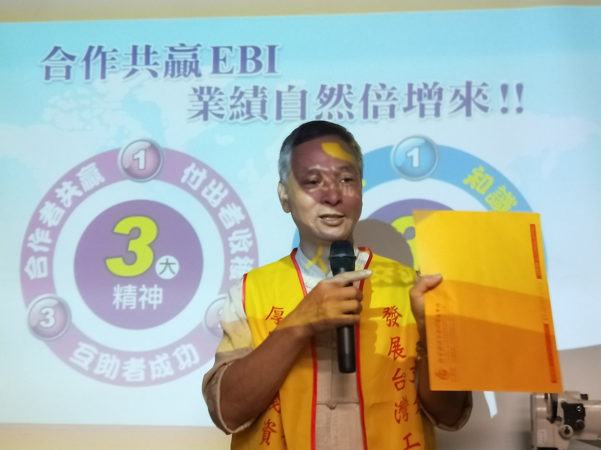
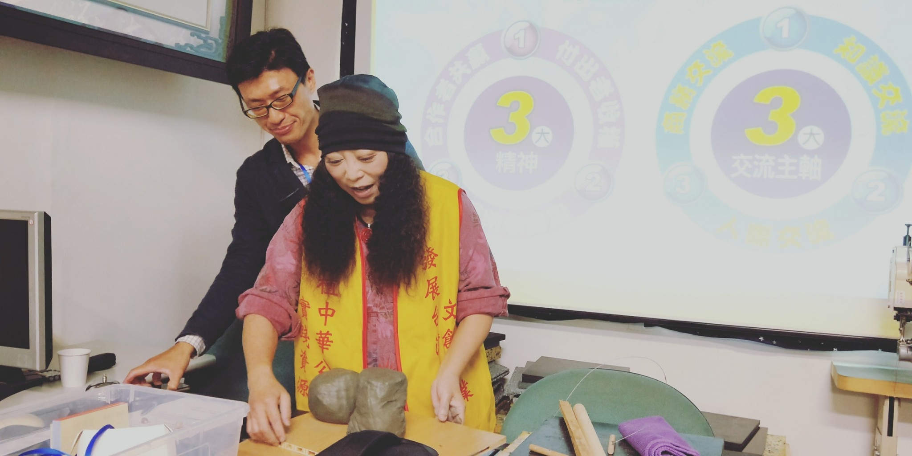
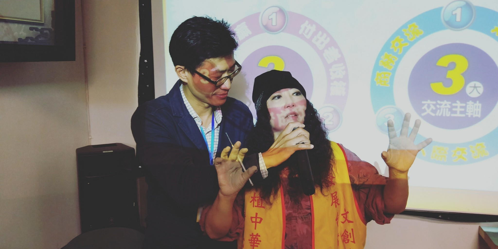
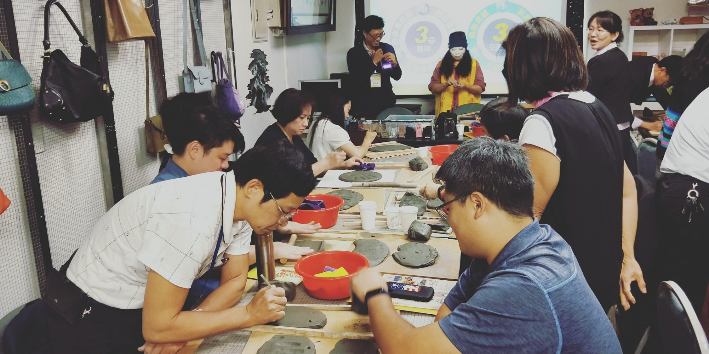
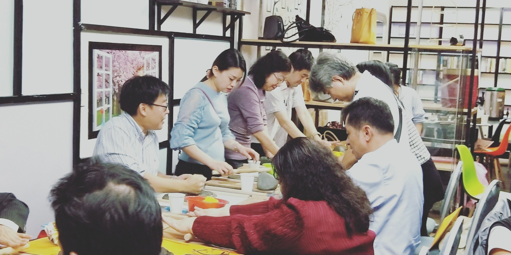
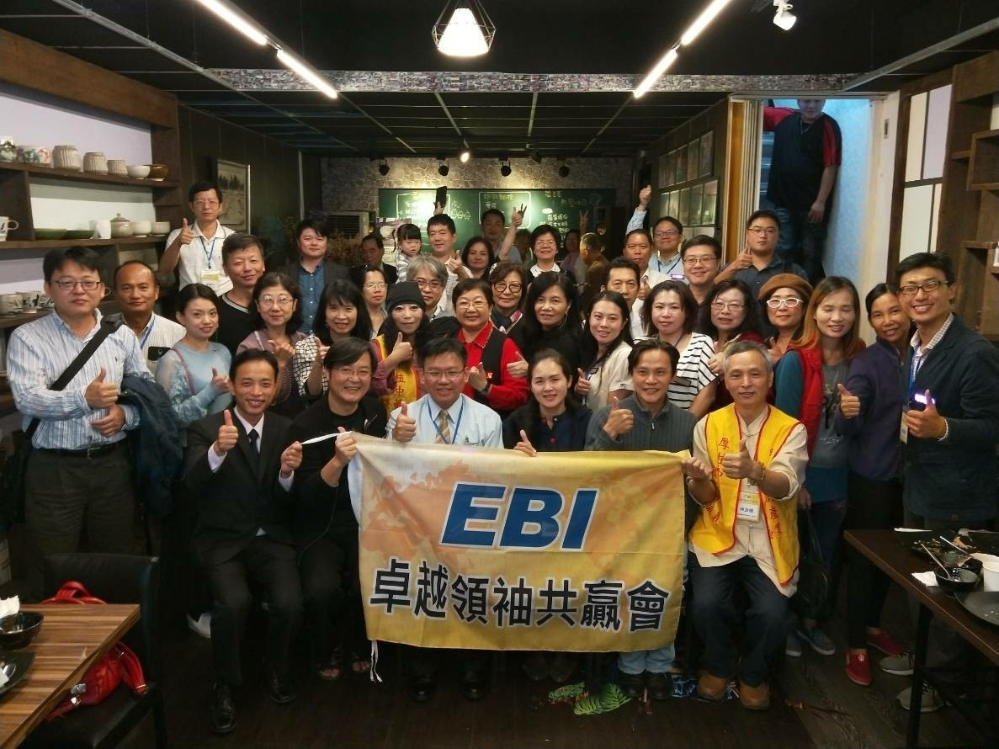
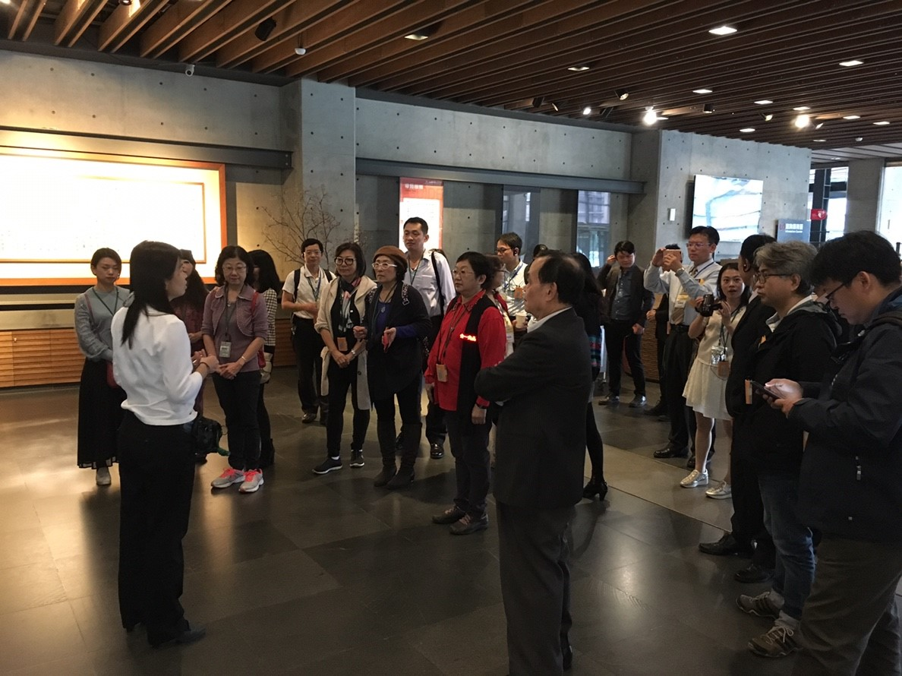
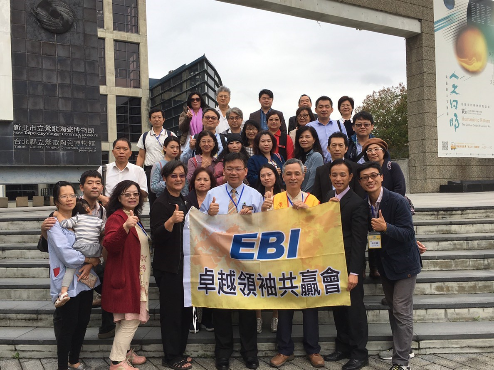

| 2018-璞真創育基地-庫泥燒體驗站成立 | |
2018年11月27日EBI卓越領袖共贏會，由創會會長徐國雄博士率領會友及伙伴們，參訪「庫泥燒」體驗站在鶯歌的第一個據點「璞真創育基地」成立活動，活動特別來賓新北市議員-洪佳君議員及前立法委員黃志雄賢伉儷親自出席致詞勉勵。活動盛況成功，活動中由弘鶯陶創意執行發展中心的陶藝老師-蔡梅芬老師，帶領伙伴們手作「庫泥燒」體驗，當日14:00再前往陶瓷博物館參訪，由館方安排導覽專員親切導覽解說。活動會上並由弘鶯陶執行長宣告正式啟動「弘鶯陶能量團隊」，現場多位伙伴熱情報名參加，「弘鶯陶能量團隊」將秉持合作共贏的核心理念，推動弘鶯陶計劃及庫泥燒社會企業的具體行動方案。 璞真創育基地：新北市鶯歌區文化路214號(鶯歌陶瓷博物館旁) 圖片來源：EBI卓越領袖共贏會伙伴提供 |
|
|  |  |
| 執行長宣告正式啟動「弘鶯陶能量團隊」 | 陶藝老師-蔡梅芬老師 |
|  |  |
| 陶藝老師-蔡梅芬老師 | EBI卓越領袖共贏會伙伴們體驗手作「庫泥燒」 |  |  | EBI卓越領袖共贏會伙伴們體驗手作「庫泥燒」 | EBI卓越領袖共贏會伙伴們與特別來賓 新北市議員洪佳君議員及前立法委員黃志雄賢伉儷合影 |
 |  | EBI卓越領袖共贏會伙伴們參訪陶瓷博物館 | EBI卓越領袖共贏會伙伴們參訪陶瓷博物館 |

庫泥燒專區 |